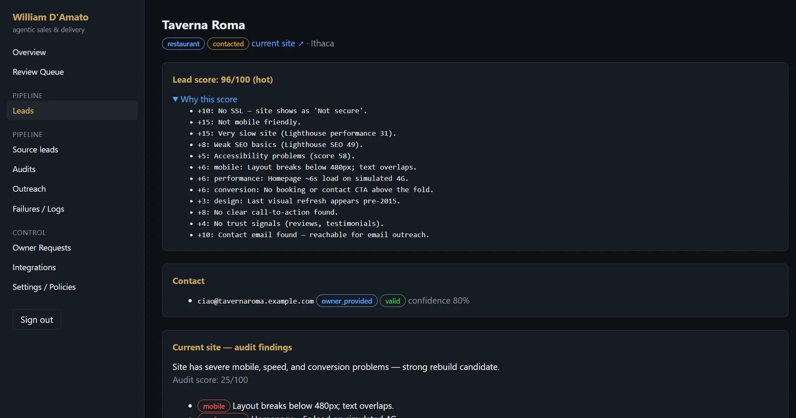
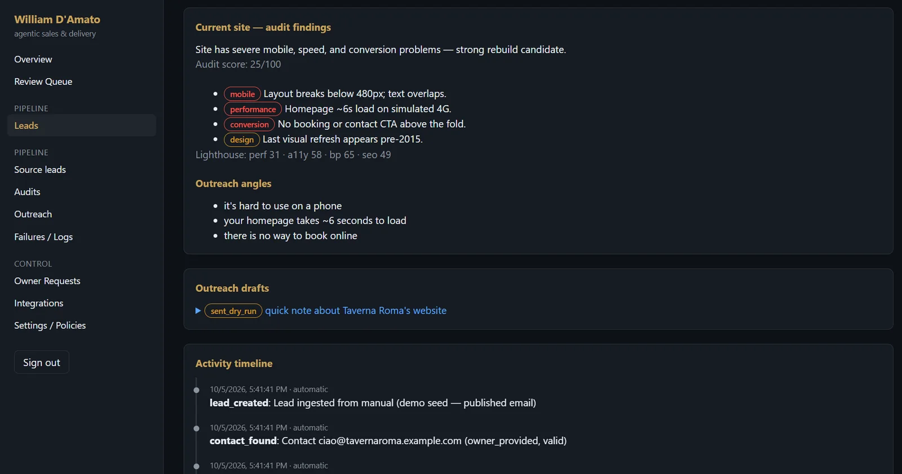
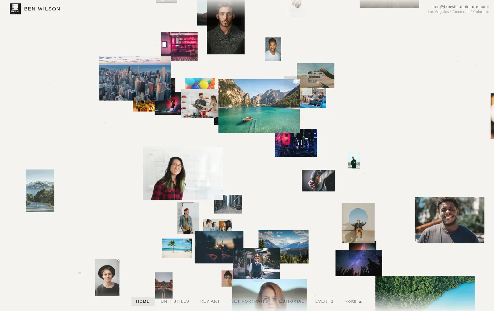

Plenty of great neighborhood businesses have no website, or one that doesn't work on a phone. I started an agency to fix that, and built an AI pipeline to do the hardest part of the job: finding them and starting the conversation. It runs on Claude, Google Maps, and Instantly.

The pipeline's control panel. Every lead shows why it scored the way it did. (Demo run with sample data.)
The pipeline
Cold outreach only works if it's specific. A generic "need a website?" email gets ignored. So every business gets audited first, and the pitch is built from what's actually wrong with its current site.
- Find. Searches Google Maps by category and neighborhood (coffee shops, barbers, med spas, landscapers) and de-duplicates the results into a lead database.
- Find a contact. Crawls each business's site for a real email, decodes obfuscated addresses, and falls back to search when the homepage comes up empty.
- Audit. Screenshots the site and checks the fundamentals: HTTPS, mobile layout, load speed, SEO, and accessibility.
- Score. Combines those checks into a single opportunity score (higher means the site needs more help), with an optional AI visual review of the screenshot.
- Draft. Writes a short, personal pitch that names the specific problems and offers a free homepage mockup up front.
- Send. Pushes approved emails to Instantly campaigns, with opt-out and do-not-contact lists checked at three separate stages.

Audit findings become outreach angles: plain-language problems the owner will recognize.
What makes a good lead, in points added to a business's opportunity score:
| Signal | Points |
|---|---|
| No website at all | +60 |
| Breaks on mobile | +15 |
| Slow to load | +15 |
| No HTTPS | +10 |
| Weak SEO | +8 |
| Accessibility issues | +5 |
From a map search to an inbox, summer 2026 in Los Angeles:
| Stage | Businesses |
|---|---|
| Found on Google Maps | 682 |
| With a reachable email | 358 |
| Contacted | 300+ |
The work
The pipeline opens the door, and the site has to close the deal. I design every site around the business's own personality instead of a template, and use AI tools heavily to move from mockup to finished build quickly.
Ben Wilson Pictures. A portfolio for a unit-still photographer working between Los Angeles, Cincinnati, and Colorado. The homepage is a slowly drifting collage of his work. From there, ten galleries (unit stills, key art, set portraits, editorial, events, and more) open into clean grids with a full-screen lightbox, all kept quiet so the photography does the talking.

Explore the live site. Gallery images are stand-ins until his own photography is loaded in.
Luisa Monâ. A Los Angeles fashion brand that wanted something closer to an art piece than a storefront. The landing page is a looping ASCII-art film. Clicking sends a wave across the character grid that reveals the store underneath: men's, women's, collections, scents, furniture, and exhibitions.
Explore the live site or read its code. The animated landing page is a large file, so give it a moment to load.
What I learned
Automation can handle the volume, but trust still has to be earned one business at a time. That's why every pitch leads with a specific problem and a free mockup rather than a sales line. Running the business end to end (prospecting, pitching, pricing, design, and delivery) taught me as much about sales as about software.
Skills applied
Python, the Claude API, Claude Code, the Google Maps Places API, Instantly, web scraping, Lighthouse auditing, lead scoring, web and brand design, cold outreach, sales and pricing, and entrepreneurship.